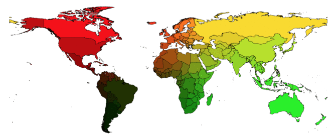
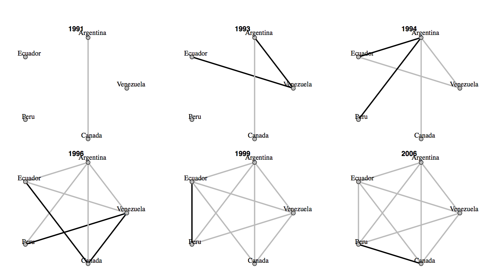
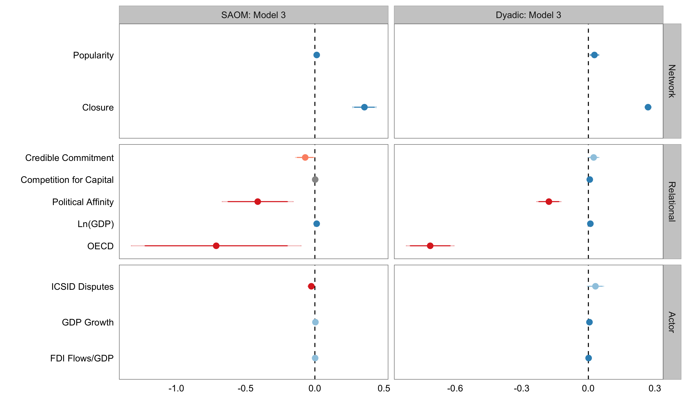
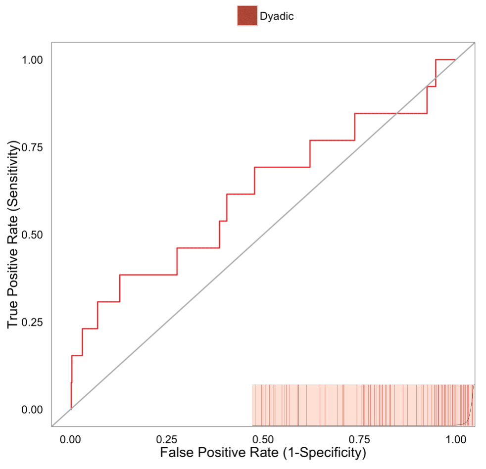
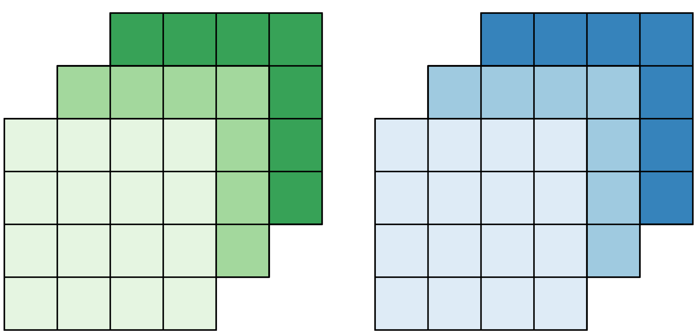
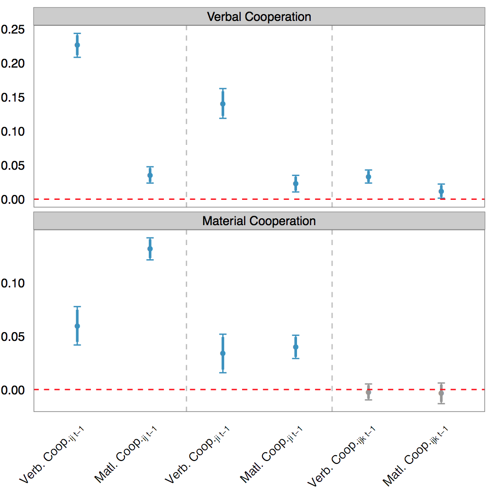

For our set of $n$ actors $\{i, j, k, l\}$, say we want to fit a generalized linear model:
- $\mathbf{y}$ represents values of our relational dependent variable,
- $\mathbf{X}$ our data matrix,
- $\boldsymbol{\theta}$ a vector of parameters to be estimated,
- and $f$ a probability distribution (e.g., Bernoulli, Normal).
$ L(\boldsymbol{\theta} \; | \; \mathbf{y}, \mathbf{X}) = f(y_{ij}, y_{ik}, y_{il}, \ldots, y_{li}, y_{lj}, y_{lk} \; | \; \mathbf{x}_{ij}, \boldsymbol{\theta}) $
If $\mathbf{y}$ are conditionally independent, we can rewrite joint as:
$L(\boldsymbol{\theta} \; | \; \mathbf{y}, \mathbf{X}) = \prod f(\mathbf{y} \; | \; \mathbf{X}, \boldsymbol{\theta})$
Ignore IID Assumption?
\begin{array}{ll}
\text{Beck et al. (1998)} & \text{Franzese & Hayes (2007)} \\
\text{Signorino (1999)} & \text{Cranmer & Desmarais (2011)} \\
\text{Hoff & Ward (2004)} & \text{Erikson & Pinto (2014)} \\
\end{array}
What to do?
- Include endogenous network measures within extant modeling approaches (e.g., Fowler 2006; Maoz 2009)
- Employ a network based approach that accounts for and measures interdependence
- Latent Space Approach: Hoff (2003)
- Exponential Random Graph Model (ERGM): Hanneke & Xing (2007)
- Stochastic Actor Oriented Model (SAOM): Snijders (1996)
Usage of SAOM Approach
\begin{array}{lll}
Economics & Geography & Psychology \\ \hline
\text{Balland et al. (2013)} & \text{Boschma et al. (2014)} & \text{Preciado et al. (2012)} \\
\text{Finger & Lux (2014)} & \text{Broekel et al. (2014)} & \text{Emery et al. (2013)} \\
\end{array}
Network Model Data Structure
- Let $\mathcal{G} = \{1, ..., g\}$ denote the set of actors
- The relation between any two actors $ij \in \mathcal{G}$ in a given year $t$ is defined as:
$y_{ij, t} = \left\{
\begin{array}{ll}
1 & : \text{if an event has taken place or} \\
& \;\;\text{persists between $i$ and $j$ at time t} \\
0 & : \text{otherwise}
\end{array}
\right.$
Time Series of Networks
The system of relations between every pair of actors is summarized in an adjacency matrix, for example:
$\begin{array}{cccc}
sender & receiver & time & event \\ \hline
i & j & t & 1 \\
i & k & t &0 \\
i & l & t &1 \\
j & i & t &1 \\
j & k & t &0 \\
j & l & t &0 \\
k & i & t &1 \\
k & j & t &0 \\
k & l & t &0 \\
l & i & t &1 \\
l & j & t &0 \\
l & k & t &0 \\
\vdots & \vdots & \vdots & \vdots \\
\end{array}$
$\mathbf{Y}$ represents time series of networks, $T = \{1, \ldots, n\}$
SAOM Assumptions
- Actors control their outgoing ties and have full knowledge of broader network
- Evolution of network process occurs in microsteps
- Only one tie can change at a microstep
- Tie change only depends on the present network
SAOM Broadstrokes
- The simulation starts out at the network observed at the first time point $t_{0}$.
- An actor is chosen randomly using a rate function.
- The identified actor gets the opportunity to set a micro step. The actor's choice is determined by their objective function.
- Model time is updated and simulation proceeds at step 2.
- The simulation terminates once modified network resembles network at $t_{1}$.
Rate Function
- Waiting time until change can be made by any actor follows an exponential distribution with parameter $\lambda_{t} g$
Actor's Objective Function
$f_{i}(\beta, x(i \leadsto j)) = \sum_{l=1}^{k} \beta_{l} s_{il} (x(i \leadsto j)) + U_{i}(t,x,j)$, where
- $s_{il} (x(i \leadsto j))$ represents $k$ structural and exogenous effects
- $\beta_{l}$ are statistical parameters
- and $U_{i}(t,x,j)$ is a random utility term
Multinomial Choice Model
$ p_{ij}(\beta, x(i \leadsto j)) = \dfrac{ exp(f_{i}(\beta, x(i \leadsto j))) }{ \sum_{h=1}^{g} exp(f_{i}(\beta, x(i \leadsto h))) } $
Parameter Estimation
- Solving the model requires the estimation of $\boldsymbol\theta = (\boldsymbol\lambda, \boldsymbol\beta)$ using a Method of Moments approach (MoM)
- Suitable statistic for $\boldsymbol\lambda$:
- $S_{\lambda_{t_{m}}} = \sum_{i,j=1, \; i \neq j}^{g} | Y_{ij,t_{m+1}} - Y_{ij, t_{m}} | $
- Suitable statistic for $\boldsymbol\beta$:
- $S_{\beta_{l,t_{m}}} = \sum_{i=1}^{g} s_{il}(Y_{t_{m+1}})$
Stochastic Approximation Process
- Combining the suitable statistics, we next determine the value $\hat{\boldsymbol\theta}$ for $\boldsymbol\theta$ as the solution of the system of equations:
\begin{align}
g_{n}(\boldsymbol\theta | z_{n}) = \sum_{t_{a} \in T} (E_{\boldsymbol\theta} \{ u(Y^{(a+1)} | Y^{(a)} = y^{(a)}) \} - u(y^{(a+1)}) ),
\end{align}
- $z_{n}$ simply means all available data
- $u(x)$ corresponds to the statistic being estimated
- The estimation for the MoM relies on MCMC simulations of the network change process (Robbins & Monro, 1951)
Formation of BIT Network

Credible Commitment?
\begin{array}{l}
\text{Vandevelde (1998)} \\ \text{Swenson (2005)} \\
\text{Büthe & Milner (2009)} \\ \text{Lupu & Poast (2013)} \\
\text{Jandhyala et al. (2011)} \\
\end{array}
An official responsible for negotiating BITs for the Dominican Republic remarked that these agreements were just a “marketing sign for the country” (Poulsen, 2011).
Operationalization
Absolute value of the difference between an $\{ij, t\}$ on the "Law and Order" measure from the International Country Risk Guide (ICRG) dataset.
Competing for Capital?
\begin{array}{l}
\text{Guzman (1998)} \\ \text{Elkins et al. (2006)} \\
\text{Neumayer & Plümper (2010)} \\
\end{array}
Hub & Spoke Structure

Operationalization
Weighted sum of BITs signed by other target countries with the same source country, weighting matrix is a measure of the degree to which countries export a similar basket of good (Neumayer & Plümper, 2010).
A senior investment lawyer called into provide expert testimony on behalf of the claimant in an ICSID proceeding asserted that, “BITs are very often pulled out of a drawer...and are put forward on the occasion of state visits when the heads of states need something to sign”.
Additionally,in 2006, the former Attorney General of Pakistan, Makhdoom Khan, noted in a gathering of investment arbitration specialists that BITs were essentially seen as “photo-op agreements” , something that countries would sign with a visiting delegation so as to highlight and reaffirm their relationship (Peterson, 2008).
Operationalization
"UNGA Ideal Point Distance", Bailey et al. (2015) provide a measure of state preferences from voting at the UNGA.
Indirect Ties
- Closure: Representation of the number of indirect ties a country has, this is a count of the number of transitive patterns in which i is involved.
$s_{i,l}(Y_{t}) = \sum_{j,k}^{g} Y_{ij,t} Y_{ik,t} Y_{jk,t}, \text{ where } i \neq j \neq k$
Preferential Attachment
- Popularity: Representation of a country’s "popularity" in the network, this is the sum of the degree centrality to whom i has had a BIT come into force.
$s_{i,l}(Y_{t}) = \sum_{j}^{g} Y_{ij,t} \sqrt{\sum_{l}^{g} Y_{kj,t}}$
BIT Ratification
- Sample includes 146 countries from 1987 to 2010
- The relation between any two actors $ij$ in a given year $t$ is defined as:
$y_{ij, t} = \left\{
\begin{array}{ll}
1 & : \text{if an agreement is in force} \\
& \;\;\;\; \text{between $i$ and $j$ at time t} \\
0 & : \text{otherwise}
\end{array}
\right.$
Model Specifications
Model 1:
Existing Explanations + Controls
Model 2:
Existing Explanations + Political Affinity + Controls
Model 3:
Existing Explanations + Political Affinity + Network Parameters + Controls
Controls
- Absolute value of the difference in $ij$ on logged GDP values
- Binary indicator of whether both $ij$ are members of the OECD by time $t$
- Number of pending and concluded ICSID disputes of country $i$
- GDP Growth of country $i$
- Net FDI Flows as a proportion of GDP of country $i$
SAOM & Dyadic Comparison

Out-of-Sample Performance

Conclusions
- What did we learn about BITs?
- Role of networks for the study of relational data?
Conclusions
- What did we learn about BITs?
- Role of networks for the study of relational data?
- Where is the field of networks going?
Multilayer Networks

- $\mathcal{G} = \{1, \ldots, g \}$ actors
- Relations between actors are measured over periods $T = \{1, \ldots, n \}$
- For every $ij$ actor pair in a given period $t$ we capture $v$ relational parameters
- Dependent variable, $\mathbf{Y}$, has dimensions $g \times g \times v \times n$
Modeling Focus
- We explain the evolution of $\mathbf{Y}$ using a network adaptation of a first order VAR model
- Explanatory features, $\mathbf{X}$, include structural characteristics of our $v$ networks, specifically:
- Direct Effect
- Reciprocal Effect
- Transitive Effect
- $\mathbf{X}$ has dimensions $g \times g \times (v * 3) \times n$
- Goal is to use previous interactions along our $v$ relational parameters to understand future interactions
Multilinear Tensor Regression
\begin{equation}
\mathbf Y = \mathbf X \boldsymbol{\times} \{ \mathbf B_{1}, \mathbf B_{2}, \mathbf B_3\} + \mathbf E , \text{where}
\end{equation}
- "$\boldsymbol{\times}$" is a multilinear operator known as the Tucker product
- $\mathbf B_{1}$ and $\mathbf B_{2}$ are $g \times g$ matrices of regressions coefficients
- $\mathbf B_{3}$ is a $v \times (v * 3)$ matrix of coefficients
- Single Country-country-variable observation:
$y_{ijvt} = \sum_i' \sum_j' \sum_k' b_{1ii'} b_{2jj'} b_{3kk'} x_{i'j'k't}$
ICEWS Dyadic Event Database
- ICEWS event data are constructed by applying NLP techniques
- Corpus includes over 30 million media reports from $\approx 275$ local and global news sources
- Focus on interactions among top fifty countries by GDP during period from 2001 to 2014 at monthly level
Cooperation Variables
- Verbal Cooperation: The occurrence of dialogue-based meetings (e.g. negotiations, peace talks), statements that express a desire to cooperate or appeal for assistance (other than material aid) from other actors.
- Material Cooperation: Physical acts of collaboration or assistance, including receiving or sending aid, reducing bans and sentencing, etc..
Relational Covariates
